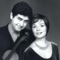
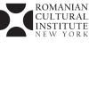
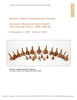

The Institute for the Study of the Ancient World will present a series of public programs, accompanying The Lost World of Old Europe exhibition with the goal of furthering the understanding and appreciation of Romanian, Bulgarian and Moldovan culture. Public programs will include a Romanian Film Series, music nights, a scholarly lecture series, which will further elucidate topics explored in the exhibition and public tours.
All public programming events are free and open to the public.
Seating available on a first come first served basis.
**Free guided tour every Friday at 6 PM
November 6, 6 PM
Dr. Nicolae Dragomir Popovici
Director of the Department of Archeology, National Museum of Romanian History
Built and Unbuilt Space in the Neolithic Danube
Dr. Popovici discusses the process of sedentism and the diversification of resource management systems in Old Europe.
December 3, 6 PM
David Anthony
Professor of Anthropology at Hartwick College and Guest Curator, The Lost World of Old Europe: The Danube Valley, 5000-3500 BC
The Rise and Fall of Old Europe
'Old Europe' refers to a cycle of Copper Age cultures in southeastern Europe that rose to a surprising level of complexity between about 5000-3500 BC and then collapsed. The astonishing art, solidly built towns and villages, and female-centered domestic cults that defined Old Europe disappeared. The decline of Old Europe is poorly understood and hotly debated. This lecture reviews competing theories of the collapse and suggests that pastoral herding societies from the arid steppes of Ukraine might have played a significant role by destabilizing the agricultural economies of Old European towns.
January 21, 2010 6 PM
Vladimir Slavchev
Scientific Associate, Varna Regional Museum of History
The Late Copper Age in the East Balkans
and the Case of Varna
and the Case of Varna
The Varna Necropolis, a cemetery that lies in the western industrial zone of Varna, Bulgaria, is one of the premiere archaeological sites in the world for the research of world pre-history. The massive interest in this cemetery is due to the abundance and variety of objects recovered from its graves, namely gold artifacts. Dr. Slavchev will discuss these grave goods (and the necropolis from which they came) in relation to Varna culture as a whole. The presence of artifacts in a wide range of materials at the cemetery, one of the burial sites of the highly-developed local community that inhabited the shore of Varna Bay at the time, suggests that the community was part of a developed network of medium and long range trading, transport and distribution of prestige items. Dr. Slavchev will argue that the local manufacturing of goods was predominantly aimed at the local community and its needs. Therefore, such prestige items could have functioned as gifts for exchange with neighboring cultures or as goods to be sold in the trading network.
April 2, 2010, 5 PM (rescheduled due to weather)
Peter Biehl
Associate Professor, Director of the Institute for European and Mediterranean Archaeology, State University of New York at Buffalo
Deconstructing the Myth of the Great Mother Goddess
Masking and Breaking the Human Body in Old Europe
Dr. Biehl will provide an overview of how the people of Old Europe represented the human body in the form of anthropomorphic figurines made of clay, bone and marble in the 6th and 5th millennium BC and discuss how studying visual representations of the human body can aid us in understanding identity and personhood in the past. One of the main objectives of the lecture is to look at anthropomorphism as well as at embodiment and entanglement of the visual body. Within this theoretical framework he will demonstrate how Neolithic and Copper Age figurines are linked to central ideas people have about their own bodies rather than about the Great Mother Goddess. He will also analyze how the perception and performance of this visual body changes at the end of Old Europe.
January 22, 2010, 7 PM
Christine & Dinu Ghezzo and Friends
This special concert will highlight folk and traditional songs from different parts of Romania. Some of the musical traditions included are Colinde (Winter Songs/Carols) , Bocete (Death Laments), Doina (Lyrical Songs) and Wedding Songs. Each song will be presented with sensitivity to traditional methods of interpretation, while bringing in new elements such as sound samples of folk instruments and improvisation by the musicians. The music will express a full spectrum of universal human emotion and experience, while sharing the rich repertoire of Romanian traditional music. Each song will be introduced with a brief description and translation of the words, and time will be set aside for audience questions.

April 8, 2010, 7 PM
Georgy Valdchev & Lora Tchekoratova
This wonderful performance featuring Bulgarian musicians, violinist Georgy Valtchev and pianist Lora Tchekoratova will showcase works by Eastern European composers inspired by the musical traditions of Bulgaria, Romania and Moldova. Works by Bulgarian lesser-known composers Vladigerov and Kaufman will be among those performed, including transcriptions from original folk material and delightful miniatures inspired by the Romantic tradition. In addition, the Violin and Piano duo will present well-known compositions by the great Romanian composer George Enescu, and the Hungarian master Bela Bartok (who studied the folk music of the region and first introduced it to the west).
November 12, 2009, 7:30 PM
Roundtable Discussion
Location: Romanian Cultural Institute, NY, auditorium
Free admission
RCINY will organize and host a roundtable with the participation of the representatives from the Museum of National History of Romania and ISAW for an inside view on this important exhibition: Crisan Museteanu (director), Ioan Opris (reseacher, Department of History), Corina Bors (archaeologist & museum specialist), Nicolae Dragomir Popovici (head of the Department of Archeology). The panel will be also joined by Florica Zaharia, Conservator in Charge, Department of Textile Conservation, Metropolitan Museum of Art.

In partnership with the Romanian Cultural Institute in New York, ISAW is excited to host a Romanian film series curated by film critic and Transilvania International Film Festival director, Mihai Chirilov. This four part series will focus on the development of Romanian society through distinct historical periods. Introductions to each film will be given by Oana Radu, Deputy Director for the Romanian Cultural Institute in New York. This series is made possible through the support of the Romanian National Center for Cinema, and courtesy of Palisades Tartan.
January 28, 2010, 7 PM
Morome?ii (The Journey) (1987)
Directed by Stere Gulea
151 min, Rating: NR
A remarkable adaptation of Marin Preda’s eponymous novel. The action unfolds in the years preceding World War II. Central to it is a village in the Danube Plain, with its complex life, visible and invisible clashes between people, between individuals and various groups, with the villagers’ constant preoccupation for more wealth, in a context of early consolidation of capitalism in the rural area. Against the background of a social shift – which will prove irreversible – the film follows the break-up of a traditional peasant family. Just like in the novel, the film is made in a realistic-mythological note, with Ilie Moromete – a Socratic character symbolic for the popular wisdom – marking a monumental performance for Victor Rebengiuc.
February 18, 2010, 7PM
Wasps’ Nest (Cuibul de Viespi) (1986)
Directed by Horea Popescu
115 min, Rating: NR
A sharp social satire about greed, hypocrisy and lack of morals, as well as a stylized picture of the rising bourgeoisie at the beginning of the 20th century, Wasps’ Nest is an adaptation of Alexandru Kiri?escu's famous play "Gai?ele" (The Tattlers). Heirs of a family that made a fortune in trading, unmatched by education or finesse, the three elderly Duduleanu sisters keep a tight rein on their entire family. The two greedy sons of one of the Duduleanu sisters set their covetous eyes on their future inheritance, driving their sister to suicide and turning her funeral into a celebration of the considerable fortune they expect to receive. Although irrational and often driven by rather petty ideals, the characters portrayed are nonetheless fascinating, , due to the energy they dedicate to achieving their goals. A grotesque moment at the graveyard, a fitting representation of the hate-filled and disloyal relations between the members of this privileged family, serves as the thoughtful and acute climax to the film.
March 4, 2010, 7 PM
Reenactment (Reconstituirea) (1968)
Directed by Lucian Pintilie
100 min, Rating: NR
Pulled from theaters after two weeks and banned for the following 22 years, during which Lucian Pintilie himself took up exile in France, Reenactment riled the authorities because of the jaundiced eye it cast upon Romanian society in the early years of Ceau?escu’s reign, though it’s easy to imagine the Communist Party apparatchiks being even more taken aback by this film’s skeptical attitude toward documentary reality and objective truth. The premise is simple enough: Following a drunken bar brawl, the two young men who started the fight are recruited to restage their actions for a state-sponsored “instructional film for young people” about the dangers of drinking. A portly district attorney in a white summer suit arrives to supervise the proceedings. Complications ranging from the absurd to the tragic ensue, while the line between fact and fiction becomes as muddy as the rain-soaked ground upon which the main characters tussle. Fresh from his equally impressive 1965 debut feature, Sunday at Six, Pintilie, then 35, was clearly awash in the convention-shattering fervor that was erupting in filmmaking all across Europe. Seen today, his films serve as a bridge from one Romanian New Wave to another. – Scott Foundas, LA Weekly
April 1, 2010, 7 PM
12:08 East of Bucharest (A fost sau n-a fost?) (2006)
Directed by Corneliu Porumboiu
89 min, Rating: NR
Courtesy of Palisades Tartan
A provincial television station decides that it’s going to produce a show on the occasion of the 16th anniversary of the fall of the communist government, focusing on what transpired in that town at the exact time that Ceau?escu fell. Unhappily, the only two eyewitnesses the station can find are a hard-drinking history teacher and an elderly retiree who works as part-time Santa Claus. The show begins, and the two panel guests pour out their versions of what happened on Dec. 22, 1989. It doesn’t take long for viewers to start phoning in their own versions of that day, often taking the eye witnesses to task for what they think are outright distortions. History —who remembers, and how—is at the heart of Corneliu Porumboiu’s “12:08 East of Bucharest,” co-winner of the Camera D’Or (Best First Film) at 2006 Cannes Film Festival. Porumboiu cleverly captures how even recent historical events take on shape and meaning according to how they explain or justify the present. — Richard Pena, Program Director, Film Society of Lincoln Center

High School Group Information Packet
Download PDF